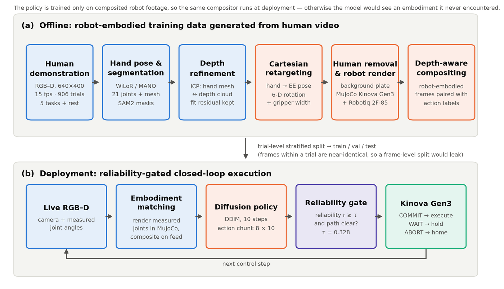
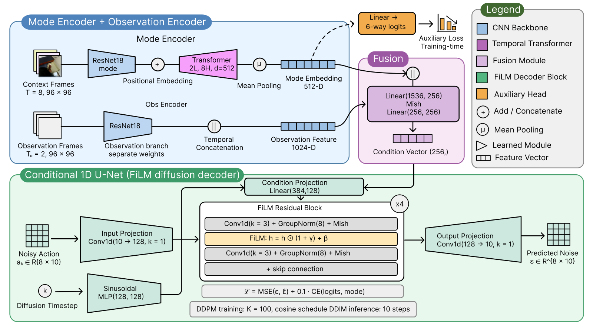
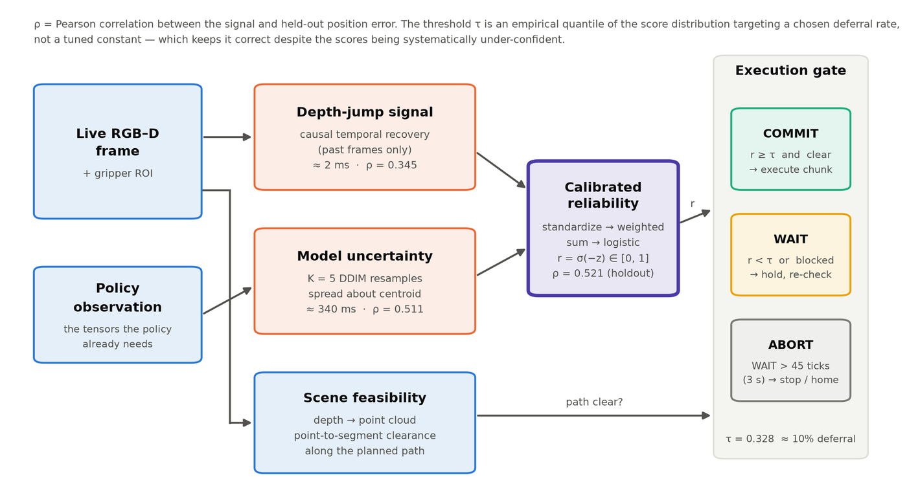
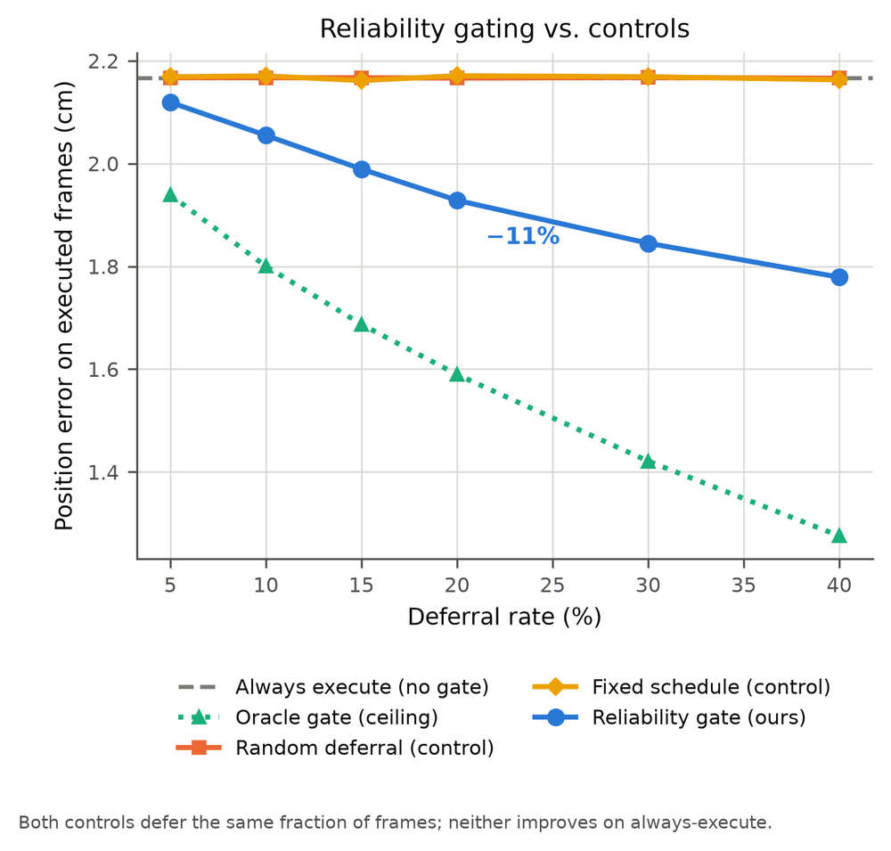
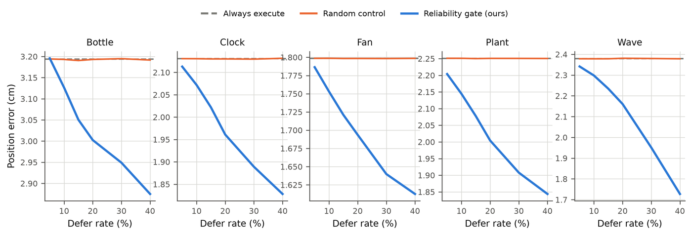

Video-to-Robot Imitation Learning
Teaching a robot household tasks normally means physically guiding the arm hundreds of times. We film a person instead. But a policy trained from camera footage inherits the camera's bad moments — so the real contribution is a system that estimates how well the robot is seeing, and pauses when it isn't.
{kind=link}

Ongoing, targeting IEEE Transactions on Robotics (T-RO). I own this one end to end — the capture rig, the perception stack, the policy, the evaluation and the write-up.
The offline result and its control experiments are complete. I am now running the real-robot arm of the study on the Kinova Gen3: gate on versus gate off in alternating blocks, with per-task success criteria fixed in writing before the first trial. Still to close before submission — the remaining ablations, and the embodiment-matching step that keeps the deployed policy seeing the rendered arm it was trained on.
In one paragraph. We teach robots household tasks by filming humans rather than manually guiding the arm. But robots trained this way don't know when their own vision is unreliable — they act confidently regardless. We add a system that continuously estimates how well the robot is seeing and pauses when it isn't. Offline this cuts errors by 11%, and control experiments confirm the gain comes from correctly identifying risky moments rather than from pausing in general. We are now validating it on real hardware.
The pipeline, step by step
Fourteen stages from a camera pointed at a kitchen counter to a policy that runs on a Kinova Gen3. Each one names the actual technique rather than gesturing at it.
-
Record people doing tasks
An RGB-D camera at 640×400, 15 fps captures five household tasks — bottle, clock, fan, plant, wave — plus an explicit rest state that turns out to matter a great deal. 906 usable trials across six condition blocks per task.
-
Find the hand in 3D
WiLoR-mini (HaMeR family, MANO hand model) gives 21 joint positions and a 778-vertex hand mesh for every frame.
-
Separate hand, arm and object from the background
SAM2 produces the masks and tracks the manipulated object through the trial.
-
Sharpen the hand pose against depth
ICP registers the hand mesh to the depth point cloud. The registration residual is kept — later it becomes one of the signals for how much to trust that frame.
-
Translate human motion into robot motion
Cartesian retargeting maps hand pose to end-effector position, orientation and gripper opening, producing actions already expressed in the robot's own frame. About 23% of frames have no computable action; those are smoothly interpolated.
-
Erase the human from the video
The policy should not train on footage containing a person's arm. Background-plate reconstruction driven by SAM2's arm mask (E2FGVI-family video inpainting) removes it.
-
Draw the robot doing the task
MuJoCo renders a Kinova Gen3 with a Robotiq 2F-85 gripper executing the retargeted motion, from the same calibrated camera viewpoint as the real footage.
-
Composite it back in
Depth-aware compositing merges the rendered arm with the inpainted background — depth decides what occludes what. The result looks like the robot performed the task, without a robot ever having been present.
-
Split the data honestly
Stratified train/val/test split at the trial level, not the frame level. Frames within a trial are nearly identical; splitting by frame would leak the test set into training.
-
Train the policy
A diffusion policy learns to turn noise into an action sequence: ResNet-18 vision encoders (ImageNet-pretrained), FiLM conditioning, a 1D U-Net decoder over the action sequence, DDPM with 100 noise steps for training and DDIM with 10 steps at inference. Rotations use the 6D representation to avoid angle wraparound. 14 variants trained for the ablation study.
{kind=link}

The contribution: teaching the robot to know when it can't see
Everything above produces a competent imitation policy. It also produces a policy that will confidently act on a frame where the depth sensor dropped out, the object is occluded, or the RGB and depth streams have drifted out of alignment. Three candidate signals for "how bad is this frame" were compared against real downstream error.
| Signal | How it works | Correlation with error | Cost |
|---|---|---|---|
| Depth-jump | How much the depth reading jumps between frames | r = 0.35 | ~2 ms |
| Model uncertainty | Run the policy 5×, measure disagreement with itself | r = 0.51 | ~340 ms |
| Combined | Both together | r = 0.52 | ~340 ms |
Four supporting techniques make the gate deployable rather than merely measurable:
- Causal temporal depth recovery — dropped depth pixels are filled using only past frames, because a live robot cannot see the future. This nearly doubled the signal's usefulness.
- Calibration — the signal is fit against real error on 80% of trials and validated on the remaining 20%.
- Geometric feasibility check — depth is lifted to a 3D point cloud and the planned path is tested for obstruction.
- ACT / DEFER / WAIT state machine — go, hold and re-check, or abort if the problem persists.
{kind=link}

Does it actually work?
On held-out trials the model never trained on, gating produces 11% lower action error at a 10–20% pause rate, and the improvement holds across all five tasks. Detection quality for bad frames reaches AUROC 0.795.
The controls are what make this convincing. Pausing on random frames: no benefit. Pausing on a fixed schedule: no benefit. Same number of frames paused in every case. So the gain comes from the robot identifying which moments are risky — not from pausing in general.


Statistics throughout: paired Wilcoxon signed-rank (errors are right-skewed, so non-parametric), Cohen's d for effect size, Holm–Bonferroni across the many comparisons, McNemar's exact test for binary outcomes, bootstrap confidence intervals, permutation tests — and a per-task breakdown reported every time, not just the aggregate.
Perception at scale
Alongside the policy work, the perception stack was audited rather than assumed. Combining SAM2 hand and object segmentation, camera calibration, temporal depth fusion and 3D back-projection raised valid object observations from 52.1% to 65.7% across 7,167 frames. A long-tail benchmark of 570 corruption conditions and 27,360 frames — depth dropout, occlusion, blur, motion blur, RGB–depth misalignment — supports a reliability estimator reaching 0.782 AUROC. In total, 1,099 RGB-D demonstrations and 154,844 frames were processed through reproducible PyTorch pipelines.
See it running
Real-robot validation (in progress)
The hardware study is designed before it is run. Two arms — gate ON versus gate OFF, everything else identical — in alternating blocks of about five so time-of-day drift cannot confound the comparison. Success is defined per task in advance, in writing. Analysis uses Fisher's exact test and Wilson binomial intervals, which behave correctly at small sample sizes.
The useful trick: log the gate's decision even when it is switched off. That makes it possible to ask, after the fact, "on the frames where the gate would have paused, did the robot actually fail?" — turning the control arm into evidence rather than just a baseline.
One prerequisite is easy to get wrong. The policy was trained only on simulated robot footage, so at deployment it must keep seeing a simulated robot: read the real arm's joint angles, render the simulated arm in that pose, and composite it over the live camera feed. Skip this and the model sees something it has never encountered.
What didn't work — reported anyway
| Tried | Outcome |
|---|---|
| Weighting training by demonstration reliability | Didn't help |
| Shrinking the model to reduce overfitting | Much worse |
| Engineered depth signal vs simply resampling the model | Engineered signal lost — but is 170× cheaper |
We also found a bug in our own data. One input was accidentally identical to the answer the model was meant to predict, which made a set of early results look far better than they were. We found it, removed those results, and documented it. It is in the write-up for the same reason it is here: a result you cannot reproduce after fixing your own leak was never a result.